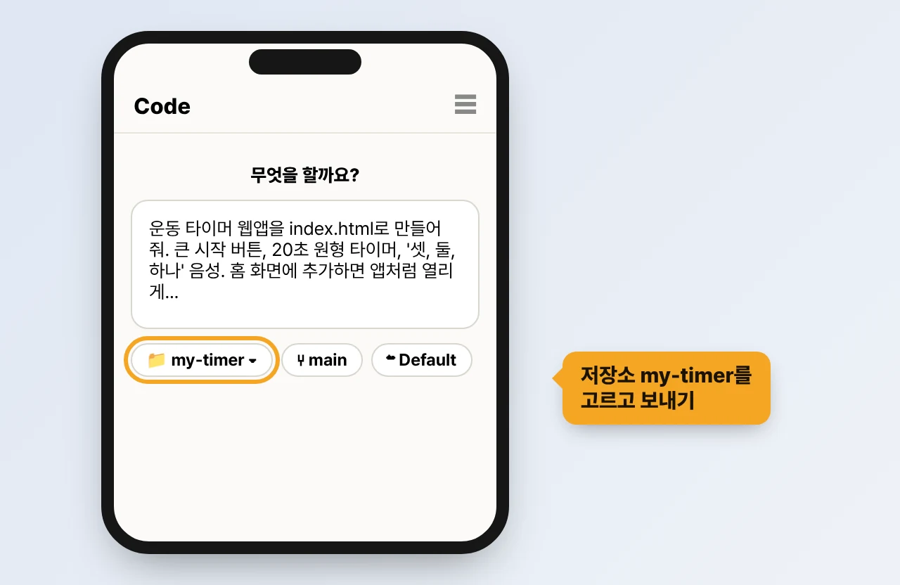
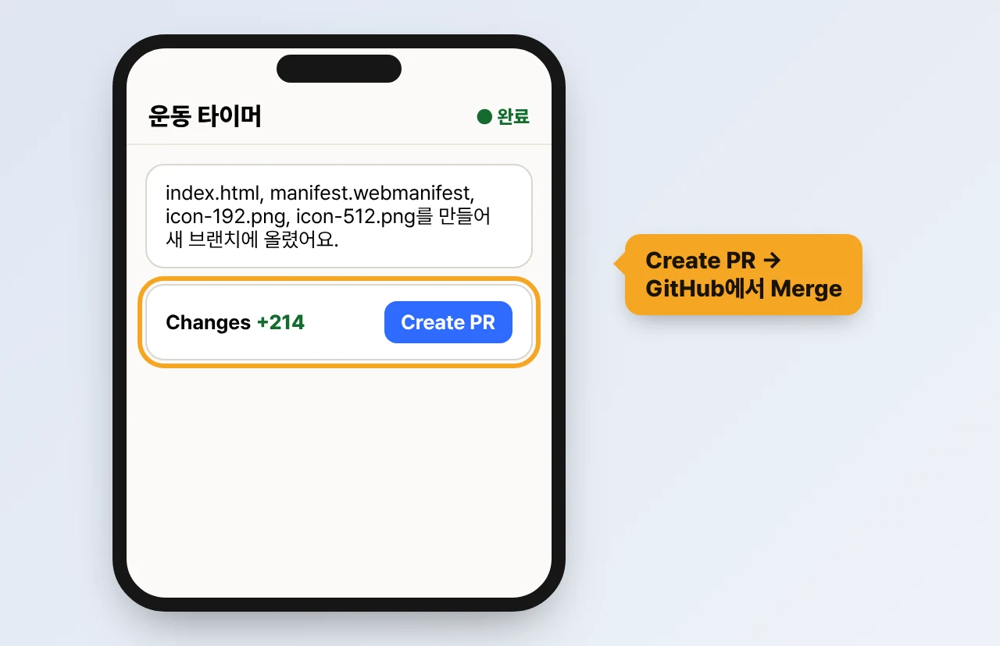
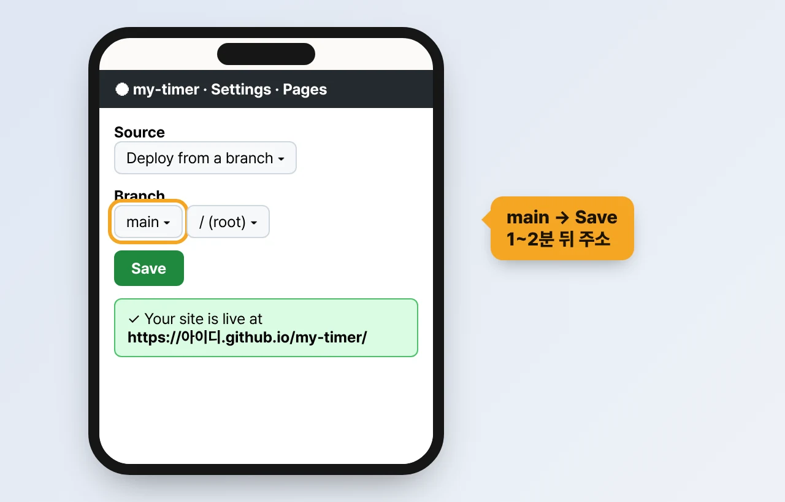
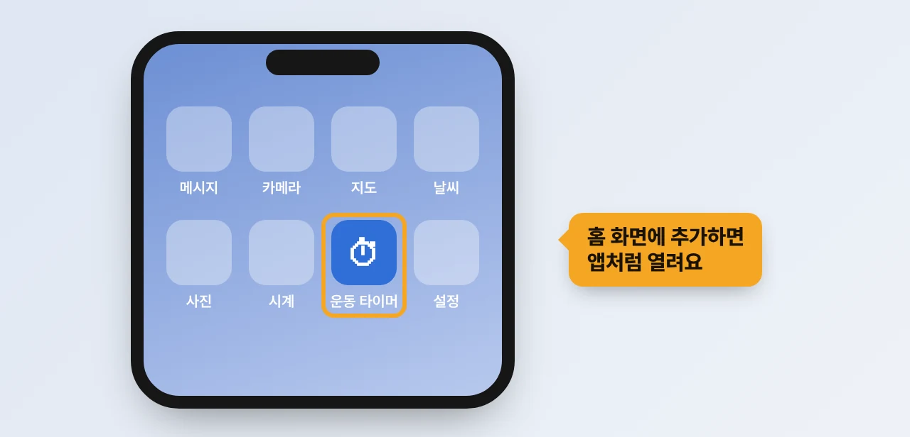
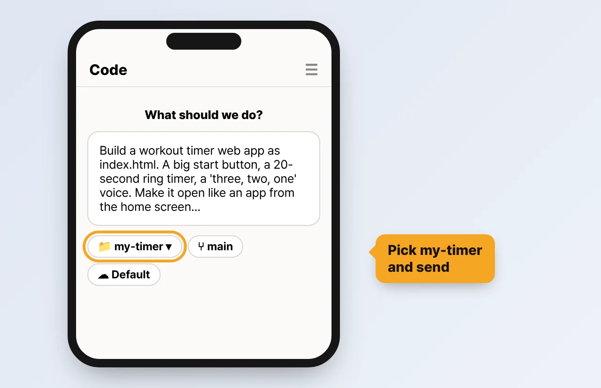
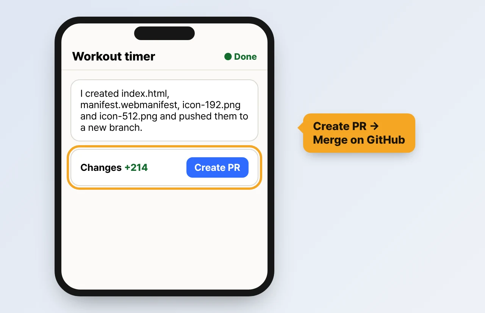
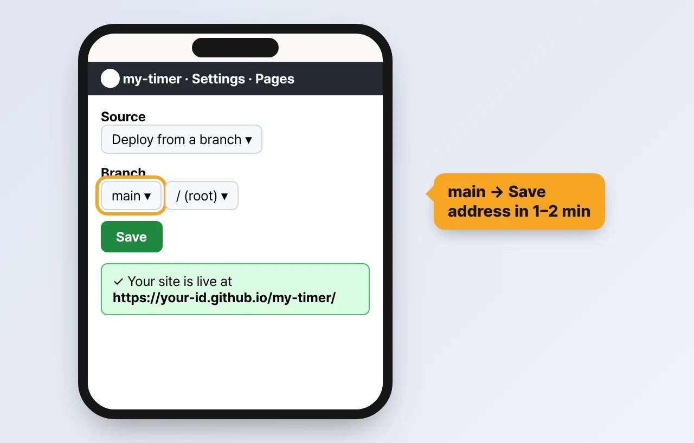
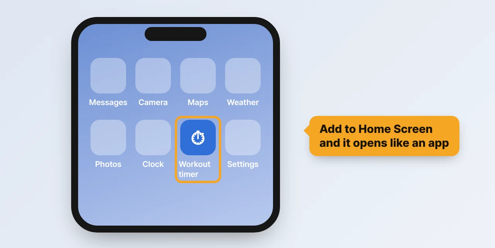

👆 이 내용은 버튼 따라 하는 실습으로도 있어요. 처음이라면 실습으로 직접 해 보고, 이 글은 복습할 때 보세요. 실습 시작하기 →
※ 글 속 그림은 따라 하기 쉽도록 그린 예시입니다. 실제 앱 화면과 모양·글자가 조금 다를 수 있어요.
이게 뭔가요?
컴퓨터 없이 휴대폰 하나로 앱을 만드는 방법이에요. 휴대폰으로 Claude에게 말하면 클라우드에서 앱을 만들고, 그 앱을 다시 휴대폰 홈 화면에 설치해요. 앱 1편과 같은 운동 타이머를 만들어요. (완성 예시 ↗)
| 앱 1·2편 | 앱 3편 (이번) | |
|---|---|---|
| 만드는 곳 | 컴퓨터 데스크톱 앱 | 휴대폰 Claude 앱 (클라우드) |
| 파일 올리기 | GitHub에 직접 Upload files | Claude가 새 가지에 올림 → 내가 병합 |
| 공개·설치 | GitHub Pages → 홈 화면에 추가 (같음) | |
GitHub 낱말이 낯설면 GitHub 한눈에 보기를 먼저 읽어 보세요.
0. 먼저 준비할 것
1. 앱을 담을 공개 저장소 만들기
- 휴대폰 브라우저(또는 GitHub 앱)로 github.com → + → New repository.
- 이름: my-timer · Public(공개) · Add a README file 체크 → Create repository.
2. Claude가 my-timer에 들어갈 수 있게 하기
휴대폰 2편에서 Claude 앱을 my-notes에만 설치했으니, 새 저장소도 넣어 줘요.
- GitHub → 프로필 → Settings → Applications → Claude 옆 Configure.
- Only select repositories 그대로 my-timer를 추가 → Save.
3. 휴대폰으로 말해서 만들게 하기
휴대폰 Claude 앱 → Code → 저장소 my-timer(브랜치 main)를 고르고 보냅니다.
운동 타이머 웹앱을 index.html로 만들어줘. 큰 시작 버튼, 20초 원형 타이머, 끝나기 3초 전부터 '셋, 둘, 하나'를 한국어 음성으로 읽어 주기, 휴대폰 화면에 맞게. 홈 화면에 추가하면 앱처럼 열리게 이름 '운동 타이머'로 manifest와 파란 바탕 시계 아이콘(PNG)도 만들어줘
몇 분 걸려요. 앱을 닫아도 계속 일해요. 클라우드에는 허락 카드가 없고, 대신 결과가 새 가지(브랜치)에 올라와요.
4. PR 만들고 병합하기
- Create PR을 누르세요. 버튼이 없으면 "PR 만들어줘"라고 보내요.
- 휴대폰 브라우저로 github.com → my-timer → Pull requests → 방금 PR.
- Files changed에 index.html·manifest·아이콘이 있는지 보고 → Merge pull request → Confirm merge.

코드를 다 읽을 필요는 없어요. 어떤 파일이 생기는지, 엉뚱한 파일(비밀번호 등)이 없는지만 보세요.
5. GitHub Pages 켜서 앱 주소 받기
- my-timer 저장소 → Settings → Pages. (휴대폰에서 메뉴가 안 보이면 브라우저의 데스크톱 사이트를 켜세요)
- Source: Deploy from a branch · Branch: main · / (root) → Save.
- 1~2분 뒤 새로고침하면 https://아이디.github.io/my-timer/ 주소가 나와요.

6. 홈 화면에 설치하기
- 안드로이드(크롬): ⋮ → 홈 화면에 추가(또는 앱 설치).
- 아이폰(사파리): 공유(□↑) → 홈 화면에 추가.

7. 고칠 때도 휴대폰으로
Code 목록에서 같은 대화를 열고 고칠 점을 보낸 뒤, PR을 병합하면 1~2분 뒤 앱에 반영돼요.
운동 20초, 쉬기 10초를 3번 반복하게 바꿔줘. 쉬는 시간에는 타이머 색을 초록으로잘 안 될 때
| 이런 경우 | 이렇게 하세요 |
|---|---|
| 저장소 목록에 my-timer가 없어요 | GitHub Settings → Applications → Claude → Configure에서 my-timer를 넣고 Save했는지 확인하세요. |
| 주소가 404예요 | 처음엔 몇 분 걸려요. index.html이 저장소 맨 위에 있는지 보고, 폴더 안이면 "index.html을 저장소 맨 위로 옮겨줘". |
| Pages에 업그레이드 안내가 나와요 | 저장소가 Private이에요. Settings 맨 아래 Change visibility → Public. |
| 아이폰에 '홈 화면에 추가'가 없어요 | 사파리에서만 돼요. |
오늘 배운 것
- 휴대폰 Code에서 저장소를 고르고 말하면, 클라우드에서 앱을 만든다.
- 허락 카드 대신 PR → 병합. 병합 전에 Files changed를 본다.
- Pages로 주소를 받고 홈 화면에 추가하면 휴대폰 앱이 된다. 앱 저장소는 공개라서 민감한 정보는 넣지 않는다.
얼른닷컴의 EarllnCore도 휴대폰으로 이렇게 만든 앱이에요. 다음 앱 4편에서는 안드로이드 앱(APK)으로 만들어요.
* The pictures are drawn examples to make the steps easy to follow. Real app screens may look slightly different.
What is this?
How to build an app with just your phone, no computer. Tell Claude on your phone, it builds the app in the cloud, and you install that app on your phone's home screen. You'll build the same workout timer as App guide 1. (finished example ↗)
| App guides 1–2 | App guide 3 (this one) | |
|---|---|---|
| Where it's built | Desktop app on a computer | Claude app on a phone (cloud) |
| Uploading | Upload files to GitHub yourself | Claude pushes to a new branch → you merge |
| Publish · install | GitHub Pages → Add to Home Screen (same) | |
If GitHub words are new, read GitHub at a glance first.
0. What you need
- Experience with Phone guide 2 (GitHub sign-up, Claude connected) and Phone guide 3 (cloud jobs and merging)
- A paid Claude plan and the Claude phone app
1. Make a public repository for the app
- In your phone browser (or the GitHub app): github.com → + → New repository.
- Name: my-timer · Public · tick Add a README file → Create repository.
2. Let Claude into my-timer
In Phone guide 2 you installed the Claude app on my-notes only, so add the new repository.
- GitHub → profile → Settings → Applications → Configure next to Claude.
- Keep Only select repositories and add my-timer → Save.
3. Describe it on your phone and have it built
Claude phone app → Code → pick the repository my-timer (branch main) and send:
Build a workout timer web app as index.html. A big start button, a 20-second ring timer, read out 'three, two, one' in English for the last 3 seconds, fitted to a phone screen. Also make a manifest named 'Workout timer' and a stopwatch icon on a blue background (PNG) so it opens like an app from the home screen
It takes a few minutes and keeps working even if you close the app. There are no permission cards in the cloud; instead the result lands on a new branch.
4. Create a PR and merge it
- Tap Create PR. No button? Send "Create a PR".
- In your phone browser: github.com → my-timer → Pull requests → the new PR.
- Check Files changed has index.html, the manifest and icons → Merge pull request → Confirm merge.

You don't have to read all the code. Just check which files are added, and that nothing odd (like passwords) is there.
5. Turn on GitHub Pages and get the app's address
- my-timer repository → Settings → Pages. (If the menu is hidden on your phone, turn on Desktop site in your browser)
- Source: Deploy from a branch · Branch: main · / (root) → Save.
- After 1–2 minutes, refresh: the address https://your-id.github.io/my-timer/ appears.

6. Install it on your home screen
- Android (Chrome): ⋮ → Add to Home screen (or Install app).
- iPhone (Safari): Share (□↑) → Add to Home Screen.

7. Update it from your phone too
Open the same chat in the Code list, send what to change, then merge the PR. The app updates 1–2 minutes later.
Change it to 20 seconds of work and 10 seconds of rest, repeated 3 times. Make the timer green during restIf it doesn't work
| If this happens | Do this |
|---|---|
| my-timer isn't in the repository list | Check you added my-timer in GitHub Settings → Applications → Claude → Configure and tapped Save. |
| The address gives a 404 | The first time takes a few minutes. Check index.html is at the top of the repository; if it's in a folder, say "Move index.html to the top of the repository". |
| Pages shows an upgrade notice | The repository is Private. Settings → bottom Change visibility → Public. |
| No 'Add to Home Screen' on iPhone | It only works in Safari. |
What you learned today
- Pick a repository in Code on your phone and describe the app; it's built in the cloud.
- PR → merge replaces permission cards. Check Files changed before merging.
- Get an address with Pages and Add to Home Screen to make it a phone app. The app repository is public, so keep sensitive data out.
Earlln's EarllnCore was built on a phone just like this. The next guide, App guide 4, turns it into an Android app (APK).